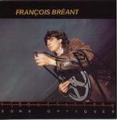

| Artist: | Francois Breant |
| Title: | Sons Optiques |
| Label: | Musea FGBG 4427 |
| Length(s): | 45 minutes |
| Year(s) of release: | 1979/2002 |
| Month of review: | [10/2002] |
| 1) | Les Journaux Annoncent La Guerre - Generique | 3.37 |
| 2) | Vacances A Concarneau - Flash Back | 3.04 |
| 3) | De Retour A Paris | 4.09 |
| 4) | Scenes De Foul Et De Poursuite Pendant Le Carnaval | 3.52 |
| 5) | Dilemme De Jeanne Au Restaurant Chinois | 4.01 |
| 6) | Survol De Rio | 3.07 |
| 7) | Scenes De Mobilisation - Flash Back - Et Retrouvailles Avec Bruno | 9.41 |
| 8) | Baiser Au Crepuscule Et Fin | 4.14 |
| 9) | Les Souffleurs De Verre | 3.50 |
| 10) | L'age D'or A Montlhery | 5.27 |